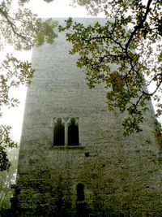
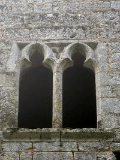
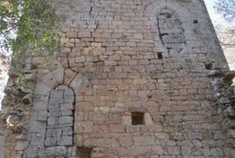
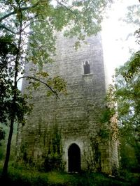
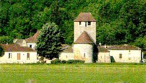

Recensement Jean-Claude Truffet
| Département | 46 — Lot |
| Canton | Puy-L |
| Commune | St-Martin le Redon |
| Type d'édifice | Tour |
| Période d'origine | XIV |





MESCALPRES, la vallée de la Thèze dans laquelle se niche en rond semble avoir été occupée depuis les époques les plus reculées. Les fouilles archéologiques mettent au jour des vestiges des périodes du Paléolithique, du Néolithique et plus récemment, de l'âge de bronze. Une nature qui offre toutes les commodités, terres riches dans la vallée, bois giboyeux sur les coteaux, sources abondantes aux vertus très tôt reconnues tout ceci explique cette occupation aux époques préhistorique et protohistorique. Cette occupation s'est naturellement poursuivie à l'époque gallo-romaine comme en témoigne la voie romaine qui traverse le village et qui relie Saint-Martin à Duravel. Cette voie romaine devient au Moyen-Âge le chemin des Auvergnats et n'est plus aujourd'hui qu'un sentier de randonnée. Du Moyen-Age subsistent l'église romane dont le clocher-tour a été surélevé à une époque postérieure, les tours du château de Guiral à Cazes-Marnhac, la tour gothique de Mescalprès dans les bois et les parties anciennes de certaines maisons du bourg dont l'aspect général est des XVIIe et XVIIIe siècles. Enfin, c'est de Saint-Martin qui s'étend jusqu'à son pied, que l'on peut le mieux contempler la puissante silhouette du château de Bonaguil, plus bel exemple de l'architecture militaire médiévale.
La haute tour de Mescalprès était au XIVe siècle, avec celles de Guiral et Marnhac, lune des tours construites par les chevaliers qui dépendaient alors du castrum de Pestilhac. La tour, que protégeait une enceinte aujourdhui disparue, forme un quadrilatère bâti en bel appareil de pierres calcaires comptant cinq niveaux. La porte d'accès à lEst, formée dun arc brisé bordé dun chanfrein, est placée au premier étage selon un principe défensif commun aux tours médiévales desservies par un escalier extérieur amovible. Au niveau supérieur, un autre arc comme celui de la face septentrionale ouvrait sur une galerie en bois. Les éléments défensifs, constitués darchères cruciformes pattées finement incisées dans la maçonnerie, sont disposés sur les côtés les plus vulnérables, à lOuest et au Sud. On a par contre privilégié à des fins d'habitation lélévation nord, sans doute mieux protégée que les autres, en créant deux fenêtres dagrément ornées darcs trilobés. Au détour d'un chemin boisé sur une motte dominant St-Martin le Redon, cette tour de guet gothique du XIVe siècle dresse sa haute silhouette solitaire au milieu d'une forêt de chênes et de châtaigniers. Elle fut sans doute une de ces innombrables tours de chevaliers affiliés au castrum de Pestilhac. Elle semble être le vestige dun imposant château fort dont les ruines émergent du lierre çà et là dans le bois. Un site plein de mystère en ce matin dautomne, une tour sans sommet qui doit être, en toute évidence, le meilleur moyen datteindre enfin le ciel.
Seigneurs locaux
"
La tour de Mescalprès